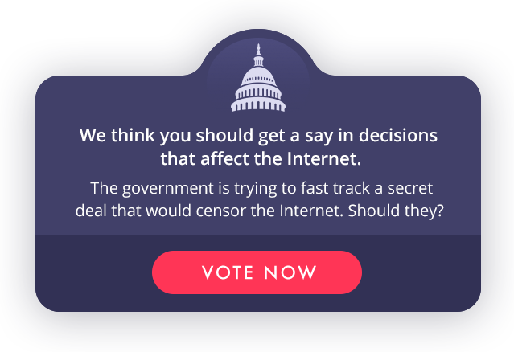

Site owners:
Get the code

Embed this code on your page to show your visitors a one-time call to action!
Put the code right before your closing </BODY> tag.
(More info)
<script src="https://fightforthefuture.github.io/internet-vote-widget/widget.min.js" async></script>
Apps: do a
push notification
If you have a mobile app, can you send just one push notification to your users? Your users will love you for it and appreciate being able to easily take action to stop a secret deal that would censor the net. Tell them that you want them to have a say in decisions that affect the Internet, and link them to https://www.battleforthenet.com/internetvote
Say you're in.
Are you participating? Tell us so we can list you, announce it to the world, and invite others to join. We’ll soon be announcing which sites are in. Then, help us spread the word about the campaign by tweeting something.
You're our
only hope.
We need to be as big and visible as possible to stop the Trans-Pacific Partnership — that’s the only way we can win this fight. We all need to get as many people in our audiences, readerships, and communities motivated to do something. We can make this powerfully epic, but only if you help. Companies need to be the frontrunners, leaders, and heroes on this because we’ve seen time and time again with SOPA, Reset The Net, and net neutrality that it’s the key ingredient to raising the bar and making sure everyone goes big.
Time is short -- Congress is introducing a bill to Fast Track the TPP in the coming weeks, so we need to act now.
We realize it’s a big ask, but this is the kind of bad legislation that only comes along once every 10 or 20 years. The TPP has pieces of every bad Internet policy we’ve fought against, and if it passes now we’ll be kicking ourselves for decades, fighting uphill battle after uphill battle on copyright reform, whistleblower protections, and so much more. Doing the most we can right now is the only rational step to protecting the open Internet.
Let us know if you're interested in principle, and if there's something you need from us to join: evan@fightforthefuture.org